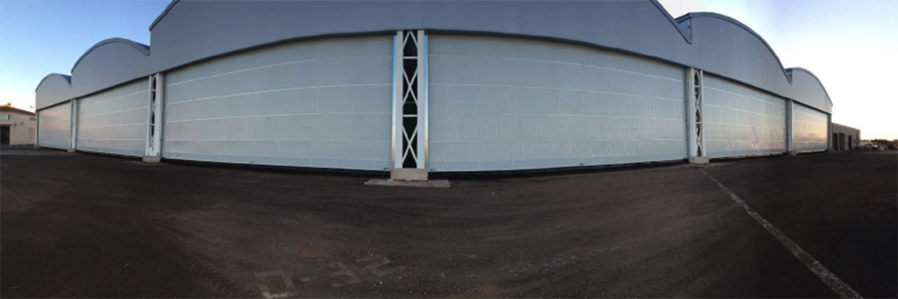

الأبواب السحابة لأعلى والأنظمة الأوتوماتيكية Overhead & Automatic Door Systems
توريد وتركيب وصيانة لجميع أنواع الأبواب الأوتوماتيكية الصناعية والتجارية والسكنية في المملكة العربية السعودية Supply, installation and maintenance for all automatic door types across Saudi Arabia
اختر نوع الباب المناسب لمشروعك Choose the Right Door for Your Project




مدار رندا متخصصة في توفير حلول متكاملة لأنظمة الأبواب الأوتوماتيكية للمصانع والمستودعات والمراكز التجارية والمستشفيات والفلل والقصور والمعارض وهناجر الطائرات. نعتمد في عملنا على معايير السلامة والمتانة وسلاسة التشغيل، مع أنظمة تشغيل موثوقة وتركيب احترافي وأداء طويل الأمد. Madar Randa specializes in integrated automatic door systems for factories, warehouses, malls, hospitals, villas, palaces, showrooms, and aircraft hangars. Our work is built on safety, durability, smooth operation, reliable drive systems, professional installation, and long-term performance.
الأبواب السحابة لأعلى Overhead Lifting Doors
تُفتح بصفيحة واحدة تنزلق عمودياً لتوفير فتحة كاملة دون الحاجة إلى مساحة أمامية. مناسبة للبيئات الصناعية والتجارية والسكنية ذات الحركة العالية. A single panel slides vertically to provide a full opening without forward clearance. Ideal for industrial, commercial, and residential environments with high-traffic movement.
لماذا الأبواب السحابة لأعلى؟ Why Overhead Doors?
الأبواب الصناعيةIndustrial Doors
مصممة للمصانع والمستودعات ذات الحركة المكثفة، تتميز بهيكل فولاذي متين وأنظمة تشغيل قادرة على تحمّل آلاف الدورات اليومية.Built for factories and warehouses with heavy traffic. Steel construction with drive systems capable of thousands of daily cycles.
باب سحاب لأعلىOverhead Sliding Door
حل متعدد الاستخدامات يتناسب مع الفتحات المتوسطة والكبيرة، يجمع بين سهولة التشغيل وسرعة الفتح والإغلاق.A versatile solution for medium and large openings, combining ease of operation with fast opening and closing speeds.
الأبواب المقاومة للحريقFire-Rated Doors
أبواب معتمدة لمقاومة الحريق، مصممة للمواقع التي تتطلب حماية إضافية وامتثالاً لاشتراطات السلامة والدفاع المدني.Certified fire-rated doors for sites requiring extra protection and compliance with civil defense safety requirements.
أبواب المعارض والمراكز التجاريةShowroom & Mall Doors
تصاميم راقية تناسب واجهات المعارض والمراكز التجارية، تجمع بين المظهر الجذاب وسهولة التشغيل وتحمّل الاستخدام المتكرر.Premium designs for showroom and commercial center frontages — combining attractive appearance with reliable operation.
أبواب الفلل والقصور الخاصةVilla & Palace Doors
حلول أبواب فاخرة مصممة خصيصاً للفلل والقصور، بأشكال وتشطيبات راقية تعكس الذوق الرفيع وتضمن الأمان الكامل.Luxury door solutions custom-designed for villas and palaces — elegant finishes reflecting refined taste with full security.
هل تحتاج إلى باب سحاب لأعلى لمشروعك؟ تواصل معنا للحصول على استشارة مجانية.Need an overhead door for your project? Contact us for a free consultation.
الأبواب المقطعية Sectional Doors
مصنوعة من ألواح أفقية مفصلية تفتح بالانطواء نحو الأعلى، توفر عزلاً حرارياً ممتازاً وتوفيراً للمساحة أمام الباب. مناسبة للكراجات والمستودعات والمداخل التجارية والمنشآت الصناعية. Made of horizontal hinged panels that fold upward, providing excellent thermal insulation and space saving in front of the door. Suitable for garages, warehouses, commercial entrances, and industrial facilities.
مزايا الأبواب المقطعية Sectional Door Advantages
أبواب مقطعيةSectional Doors
ألواح فولاذية مزدوجة الجدار بحشوة عازلة، توفر متانة عالية وعزلاً حرارياً وصوتياً. متوفرة بألوان وتشطيبات متنوعة تلائم الكراجات والمستودعات والمداخل التجارية.Double-wall steel panels with insulating fill — high durability, thermal and acoustic insulation. Available in multiple colors and finishes for garages, warehouses, and commercial entrances.
تريد معرفة المزيد عن الأبواب المقطعية؟ فريقنا جاهز للإجابة.Want to know more about sectional doors? Our team is ready to answer.
الأبواب الأوتوماتيكية الزجاجية Automatic Glass Doors
أنظمة مداخل حديثة للأماكن ذات الحركة العالية التي تحتاج إلى مظهر أنيق وسهولة وصول وحركة أوتوماتيكية سلسة. مثالية للمستشفيات والمراكز التجارية والمكاتب. Modern entrance systems for high-traffic venues requiring elegant appearance, easy access, and smooth automatic movement. Ideal for hospitals, malls, and office buildings.
ما يميز الأبواب الزجاجية الأوتوماتيكية What Sets Automatic Glass Doors Apart
أبواب أوتوماتيكية زجاجيةAutomatic Glass Doors
نظام الدخول الأوتوماتيكي الأكثر انتشاراً للمباني التجارية والمكاتب، يجمع بين المظهر الشفاف والأنيق وسهولة التشغيل والموثوقية العالية.The most widely used automatic entry system for commercial buildings and offices — transparent, elegant, easy to operate, highly reliable.
أبواب المعارض والمراكز التجاريةShowroom & Mall Doors
أبواب واسعة ذات فتحة كبيرة لاستيعاب تدفق الزوار العالي في المراكز التجارية والمعارض، مع تصميم زجاجي يضفي انفتاحاً بصرياً على الواجهة.Wide-opening doors for high visitor flow in malls and showrooms, with glass design that adds visual openness to the frontage.
أبواب المستشفياتHospital Doors
مصممة خصيصاً للقطاع الصحي مع حساسات متقدمة تضمن السلامة، وسرعة استجابة عالية لاستيعاب عربات المرضى والطوارئ بسلاسة.Specifically designed for healthcare environments with advanced sensors for safety and high response speed to accommodate patient carts and emergency flows.
هل مشروعك يحتاج إلى أبواب زجاجية أوتوماتيكية؟ احصل على عرض سعر مخصص.Does your project need automatic glass doors? Get a custom quote.
الأبواب السريعة PVC High-Speed PVC Doors
أبواب سريعة الحركة تُستخدم في المصانع والمستودعات والمخازن الباردة ومناطق اللوجستيات. تتيح تدفق العمل دون توقف وتحافظ على بيئة العمل من الغبار والحرارة والتلوث. Fast-moving doors used in factories, warehouses, cold storage, and logistics areas. Enable uninterrupted workflow while maintaining the working environment from dust, heat, and contamination.
لماذا الأبواب السريعة PVC؟ Why High-Speed PVC Doors?
الأبواب السريعة PVCHigh-Speed PVC Doors
أبواب لفّية سريعة بستارة PVC مرنة وعازلة، تتراوح سرعة فتحها بين 1–3 متر في الثانية، مع أنظمة تحكم ذكية ومستشعرات أمان متعددة. الخيار الأمثل للبيئات الصناعية والغذائية والصيدلانية واللوجستية.Fast roll-up doors with flexible PVC curtain, opening speeds of 1–3 m/s, smart control systems and multiple safety sensors. The optimal choice for industrial, food, pharmaceutical, and logistics environments.
هل مشروعك الصناعي يحتاج إلى أبواب سريعة PVC؟ تواصل معنا الآن.Does your industrial project need high-speed PVC doors? Contact us now.
أبواب هناجر الطائرات Aircraft Hangar Doors
أنظمة أبواب هندسية ضخمة مصممة للمنشآت الجوية والهناجر ومناطق الصيانة والفتحات الصناعية الكبيرة. تجمع بين الهيكل الثقيل والتشغيل السلس والتصميم المخصص حسب المتطلبات. Large-scale engineered door systems for aviation facilities, hangars, maintenance areas, and large industrial openings — combining heavy-duty structure with smooth operation and custom design.
مزايا أبواب الهناجر Hangar Door Advantages
أبواب هناجر الطائراتAircraft Hangar Doors
أبواب سحابة لأعلى أو جانبية مصممة للهناجر الجوية، بأبعاد تستوعب الطائرات بكافة أحجامها مع أنظمة تشغيل آمنة وسلسة.Overhead or sliding doors designed for aviation hangars with dimensions accommodating aircraft of all sizes, with safe and smooth drive systems.
أبواب هناجر الطائرات المنطويةFolding Hangar Doors
نظام أبواب منطوية أفقياً تفتح الفتحة الكاملة للهنجر دون الحاجة لمساحة رأسية، مثالية للمنشآت ذات الارتفاع المحدود.Horizontal bi-fold system opening the full hangar span without vertical clearance — ideal for facilities with limited height.
أبواب هناجر الطائرات السحابة لأعلى PVCOverhead PVC Hangar Doors
أبواب هناجر خفيفة الوزن من PVC المقوّى تسحب لأعلى، توفر عزلاً جيداً مع تشغيل سريع وكلفة إنشائية أقل مقارنة بالأنظمة الفولاذية الثقيلة.Lightweight reinforced PVC overhead hangar doors — good insulation, fast operation, and lower construction cost compared to heavy steel systems.
مشروعك يتطلب أبواب هناجر طائرات؟ نحن نتعامل مع المشاريع الكبرى.Does your project require aircraft hangar doors? We handle large-scale projects.
كيف تختار الباب المناسب لمشروعك؟ How to Choose the Right Door for Your Project?
كل منشأة لها متطلبات مختلفة. استخدم هذا الجدول للتعرف على الخيار الأنسب لطبيعة موقعك. Every facility has different requirements. Use this table to identify the best option for your site.
| نوع المنشأةFacility Type | الباب الأنسبRecommended Door | سبب الاختيارWhy This Choice |
|---|---|---|
| مصنع أو مستودعFactory or Warehouse | الأبواب الصناعية / الأبواب السريعة PVCIndustrial Doors / High-Speed PVC | تتحمل الاستخدام الشديد وتحافظ على بيئة العملWithstands heavy use and maintains the working environment |
| مركز تجاري أو معرضMall or Showroom | الأبواب الزجاجية الأوتوماتيكيةAutomatic Glass Doors | مظهر راقٍ وسهولة وصول لأعداد كبيرة من الزوارElegant appearance and easy access for large visitor volumes |
| فيلا أو قصرVilla or Palace | أبواب الفلل والقصور الخاصةVilla & Palace Doors | تشطيبات فاخرة وتصاميم مخصصة تعكس الذوق الرفيعLuxury finishes and custom designs reflecting refined taste |
| مستشفى أو منشأة صحيةHospital or Healthcare | أبواب المستشفيات الأوتوماتيكيةAutomatic Hospital Doors | حساسات متقدمة وسهولة مرور عربات المرضى والطوارئAdvanced sensors and easy passage for patient carts and emergencies |
| كراج سكني أو تجاريResidential or Commercial Garage | الأبواب المقطعيةSectional Doors | عزل ممتاز وتوفير للمساحة وتشغيل هادئExcellent insulation, space saving, and quiet operation |
| مخزن بارد أو بيئة حساسةCold Storage or Sensitive Environment | الأبواب السريعة PVCHigh-Speed PVC Doors | سرعة فتح عالية تقلل تسرب الهواء والتلوثHigh opening speed reduces air leakage and contamination |
| هنجر طائرات أو منشأة جويةAircraft Hangar or Aviation Facility | أبواب هناجر الطائراتAircraft Hangar Doors | أبعاد ضخمة مخصصة وهيكل ثقيل يلائم المنشآت الجويةCustom massive dimensions and heavy-duty structure for aviation facilities |
شريكك الموثوق في حلول الأبواب الأوتوماتيكية Your Trusted Partner in Automatic Door Solutions
خبرة في حلول الأبواب الأوتوماتيكيةExpertise in Automatic Door Solutions
تجربة واسعة في تنفيذ مشاريع متنوعة تشمل المصانع والمستشفيات والمجمعات التجارية والمنشآت الجوية.Extensive experience executing diverse projects across factories, hospitals, commercial complexes, and aviation facilities.
توريد وتركيب احترافيProfessional Supply & Installation
نتولى العملية كاملة من التقييم الإنشائي والتوريد إلى التركيب والتشغيل التجريبي بفرق فنية متخصصة.We handle the full process from structural assessment and supply to installation and commissioning with specialized technical teams.
حلول لجميع القطاعاتSolutions for All Sectors
خدمات تشمل القطاعات الصناعية والتجارية والسكنية والصحية والجوية — حل واحد شامل من مورد واحد موثوق.Services covering industrial, commercial, residential, healthcare, and aviation sectors — one comprehensive solution from one trusted supplier.
دعم فني وصيانةTechnical Support & Maintenance
عقود صيانة دورية واستجابة سريعة لضمان استمرار تشغيل أبوابك دون توقف.Periodic maintenance contracts and fast response to ensure your doors continue operating without interruption.
أنظمة تشغيل موثوقةReliable Drive Systems
نختار أنظمة التشغيل بعناية لضمان أداء ثابت على مدى سنوات في ظروف مناخ المملكة العربية السعودية.We carefully select drive systems to ensure consistent performance for years in Saudi Arabia's climate conditions.
تنفيذ حسب احتياج الموقعSite-Specific Execution
كل مشروع يُدرس ويُنفّذ وفق احتياجات الموقع الفعلية — لا حلولاً جاهزة، بل تصميم يناسبك.Every project is studied and executed according to the actual site needs — no off-the-shelf solutions, but a design that fits you.
من مشاريع مدار رندا From Madar Randa Projects
أبواب صناعيةIndustrial Doorsأبواب زجاجيةGlass Doors أبواب زجاجية تجاريةCommercial Glassأبواب سريعة PVCHigh-Speed PVCأبواب هناجر الطائراتAircraft Hangar
أبواب زجاجية تجاريةCommercial Glassأبواب سريعة PVCHigh-Speed PVCأبواب هناجر الطائراتAircraft Hangar أبواب مستودعاتWarehouse Doors
أبواب مستودعاتWarehouse Doors أبواب الفللVilla Doors
أبواب الفللVilla Doorsإجابات على أكثر الأسئلة شيوعاً Answers to the Most Common Questions
هل تحتاج إلى اختيار الباب المناسب لمشروعك؟ Need Help Choosing the Right Door for Your Project?
تواصل مع فريق مدار رندا للحصول على استشارة فنية واختيار النظام الأنسب حسب طبيعة الموقع والاستخدام. Contact the Madar Randa team for a technical consultation and to choose the most suitable system based on your site's nature and use.